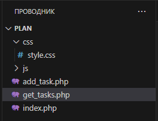
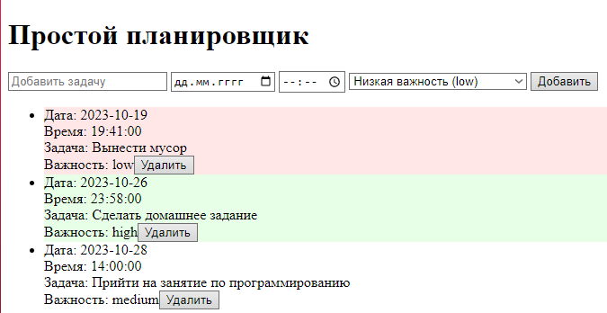
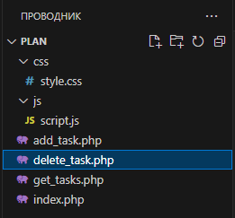
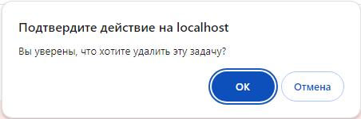
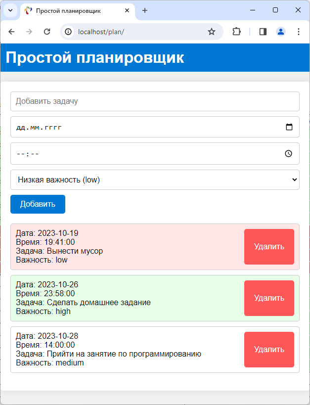

|
Например, вы можете использовать объект Date() для отображения текущей даты и времени на веб-странице, для управления сроками или событиями в вашем приложении, или для выполнения других операций, связанных со временем. |
Развивая свои навыки разработки, Маша решила усовершенствовать планировщик цветами и сортировками. Она очень любит, когда визуально выделены важные фрагменты, поэтому придумала свою палитру для отображения просроченных задач и вещей, которые предстоит сделать сегодня.
Цель этого занятия – завершение разработки веб-планировщика.
Задачи занятия:
Для того чтобы вывести задачи на страницу, необходимо получить их из таблицы и уже с этими данными работать. Чтобы "вытащить" информацию, создадим новый файл "get_tasks.php" с подключением и запросом к базе данных (рис. 2.1).

Рис. 2.1. Настройка названия программы
et_tasks.php:
<?php $host = "localhost"; // Хост базы данных $username = "root"; // Имя пользователя базы данных $password = "mysql"; // Пароль пользователя базы данных $database = "test"; // Имя базы данных $connection = mysqli_connect($host, $username, $password, $database); if (!$connection) { die("Ошибка подключения: " . mysqli_connect_error()); } $query = "SELECT * FROM tasks ORDER BY task_date ASC, task_time ASC"; // SQL-запрос для выбора задач из базы данных $result = mysqli_query($connection, $query); // Выполнение SQL-запроса и получение результата $tasks = array(); // Создание пустого массива для хранения задач while ($row = mysqli_fetch_assoc($result)) { $tasks[] = $row; // Добавление каждой выбранной задачи в массив $tasks } echo json_encode($tasks); // Преобразование массива задач в формат JSON и вывод на экран mysqli_close($connection); // Закрытие соединения с базой данных ?> |
Замечательно, но это еще не все. Теперь необходимо обработать данные, отсортировать и отобразить на странице. Тут нам понадобится JavaScript. Файл для написания функций уже был создан: "script.js". Но для начала определимся с сортировками и параметрами вывода задач:
Результат получим следующий (рис. 2.2):
JSON (JavaScript Object Notation) – это легковесный формат обмена данными, который используется для представления информации в виде текста. Он основан на синтаксисе объектов в языке программирования JavaScript и предоставляет простой способ хранения и передачи структурированных данных между разными приложениями. JSON использует пары "ключ–значение" и поддерживает следующие типы данных:
JSON легко читается как людьми, так и машинами, что делает его идеальным для передачи данных между веб-серверами и клиентскими веб-приложениями. Он широко используется в веб-разработке, API (интерфейсы программирования приложений) и многих других областях. Объект Date() в языке программирования JavaScript представляет собой способ работы с датой и временем. Он позволяет программистам создавать, изменять и извлекать информацию о датах и времени в своих приложениях. Проще говоря, Date() используется для работы со временем и датой в коде. Это может включать в себя следующие действия:
Вы можете использовать различные методы объекта Date, чтобы извлечь информацию о текущей дате. Например, var year = currentDate.getFullYear(); // Год (например, 2023) var month = currentDate.getMonth(); // Месяц (0-11, где 0 – январь, 11 – декабрь) var day = currentDate.getDate(); // День месяца (1-31) var hours = currentDate.getHours(); // Часы (0-23) var minutes = currentDate.getMinutes(); // Минуты (0-59) var seconds = currentDate.getSeconds(); // Секунды (0-59) |
|
Например, вы можете использовать объект Date() для отображения текущей даты и времени на веб-странице, для управления сроками или событиями в вашем приложении, или для выполнения других операций, связанных со временем. |
script.js:
// Функция loadTasks загружает задачи с сервера и отображает их на странице function loadTasks() { fetch('get_tasks.php') // Отправляем GET-запрос на сервер для получения задач .then(response => response.json()) // Преобразование ответа в формат JSON .then(data => { const taskList = document.getElementById('task-list'); // Получение элемента списка задач taskList.innerHTML = ''; // Очистка списка задач перед обновлением data.forEach(task => { const listItem = document.createElement('li'); // Создание нового элемента списка (задачи) const taskDate = new Date(task.task_date + 'T' + task.task_time); // Создание объекта даты и времени задачи const currentDate = new Date(); // Получение текущей даты и времени listItem.innerHTML = `Дата: ${task.task_date}<br>Время: ${task.task_time}<br>Задача: ${task.task}<br>Важность: ${task.priority}`; // Заполнение элемента списка информацией о задаче if (taskDate < currentDate) { listItem.style.backgroundColor = '#ffe7e7'; // Простроченная задача (красный фон) } else if (taskDate.toDateString() === currentDate.toDateString()) { listItem.style.backgroundColor = '#e7ffe7'; // Сегодняшняя задача (зеленый фон) } listItem.innerHTML += `<button onclick='deleteTask(${task.id})'>Удалить</button>`; // Добавление кнопки удаления задачи taskList.appendChild(listItem); // Добавление элемента списка задач в список }); }) .catch(error => { alert("Произошла ошибка при загрузке задач"); // Вывод сообщения об ошибке при неудачной загрузке задач }); } // Загрузка задач при загрузке страницы loadTasks(); |

Рис. 2.2. Вывод задач на страницу
Для добавления функционала кнопкам необходимо расширить наш код в "script.js" и написать новый файл "delete_task.php" с запросом на языке PHP (рис. 2.3 – 2.4):

Рис. 2.3. Новый файл с запросом на удаление
delete_task.php:
script.js:
// Функция deleteTask принимает идентификатор задачи (taskId) для удаления function deleteTask(taskId) { if (confirm("Вы уверены, что хотите удалить эту задачу?")) { // При подтверждении удаления задачи fetch(`delete_task.php?id=${taskId}`, { method: 'GET' }) .then(() => { window.location.reload(); // Перезагрузка страницы после успешного удаления }) .catch(error => { alert("Произошла ошибка при удалении задачи"); // Вывод сообщения об ошибке при неудачном удалении }); } } // Функция loadTasks загружает задачи с сервера и отображает их на странице function loadTasks() { fetch('get_tasks.php') // Отправляем GET-запрос на сервер для получения задач .then(response => response.json()) // Преобразование ответа в формат JSON .then(data => { const taskList = document.getElementById('task-list'); // Получение элемента списка задач taskList.innerHTML = ''; // Очистка списка задач перед обновлением data.forEach(task => { const listItem = document.createElement('li'); // Создание нового элемента списка (задачи) const taskDate = new Date(task.task_date + 'T' + task.task_time); // Создание объекта даты и времени задачи const currentDate = new Date(); // Получение текущей даты и времени listItem.innerHTML = `Дата: ${task.task_date}<br>Время: ${task.task_time}<br>Задача: ${task.task}<br>Важность: ${task.priority}`; // Заполнение элемента списка информацией о задаче if (taskDate < currentDate) { listItem.style.backgroundColor = '#ffe7e7'; // Простроченная задача (красный фон) } else if (taskDate.toDateString() === currentDate.toDateString()) { listItem.style.backgroundColor = '#e7ffe7'; // Сегодняшняя задача (зеленый фон) } listItem.innerHTML += `<button onclick='deleteTask(${task.id})'>Удалить</button>`; // Добавление кнопки удаления задачи taskList.appendChild(listItem); // Добавление элемента списка задач в список }); }) .catch(error => { alert("Произошла ошибка при загрузке задач"); // Вывод сообщения об ошибке при неудачной загрузке задач }); } // Загрузка задач при загрузке страницы loadTasks(); |

Рис. 2.4. Новый файл с запросом на удаление
По функционалу Маше все очень нравилось, но не хватало красок. Она любит все красивое и яркое, поэтому пора добавлять и заполнять наш CSS-файл (style.css, рис. 2.5).
style.css:
body { font-family: Arial, sans-serif; margin: 0; padding: 0; background-color: #f0f0f0; } h1 { background-color: #0078d4; color: white; padding: 10px; margin: 0; } #app { max-width: 600px; margin: 20px auto; padding: 20px; background-color: white; border-radius: 5px; box-shadow: 0 0 10px rgba(0, 0, 0, 0.1); } form { display: flex; flex-wrap: wrap; gap: 10px; margin-bottom: 20px; } input[type="text"], input[type="date"], input[type="time"], select { flex-grow: 1; padding: 10px; border: 1px solid #ccc; border-radius: 5px; font-size: 16px; width: 100%; min-width: 150px; } button { padding: 10px 20px; background-color: #0078d4; color: white; border: none; border-radius: 5px; font-size: 16px; cursor: pointer; transition: box-shadow 0.1s; /* Добавляем плавную анимацию при изменении тени */ } /* Стили для кнопки при наведении */ button:hover { box-shadow: 0 0 5px rgb(0, 0, 0); /* Добавляем тень при наведении */ } ul { list-style: none; padding: 0; } li { padding: 10px; background-color: #fff; border: 1px solid #ccc; border-radius: 5px; margin-bottom: 10px; display: flex; justify-content: space-between; } li button { background-color: #ff5757; color: white; border: none; border-radius: 5px; cursor: pointer; } /* Стили для каждой задачи */ .task { border: 1px solid #ccc; border-radius: 5px; padding: 10px; margin: 10px 0; background-color: #f9f9f9; } /* Стили для просроченных задач */ .task.overdue { background-color: #ffe7e7; /* Красный фон для просроченных задач */ } /* Стили для сегодняшних задач */ .task.today { background-color: #e7ffe7; /* Зеленый фон для сегодняшних задач */ } |

Рис. 2.5. Новый файл с запросом на удаление
На этом второе занятие окончено!
В рамках этого занятия мы завершили разработку веб-планировщика.
На следующем занятии мы узнаем о другом инструменте для создания планировщика.
После прохождения каждого занятия рекомендуем повторить все термины, которые были изучены, а также закрепить пройденный материал, ответив на контрольные вопросы.
Это нужно запомнить |
|
JSON (JavaScript Object Notation) – это легковесный формат обмена данными, который используется для представления информации в виде текста. Он основан на синтаксисе объектов в языке программирования JavaScript и предоставляет простой способ хранения и передачи структурированных данных между разными приложениями. JSON использует пары "ключ-значение" и поддерживает следующие типы данных:
JSON легко читается как людьми, так и машинами, что делает его идеальным для передачи данных между веб-серверами и клиентскими веб-приложениями. Он широко используется в веб-разработке, API (интерфейсы программирования приложений) и многих других областях. Объект Date() в языке программирования JavaScript представляет собой способ работы с датой и временем. Он позволяет программистам создавать, изменять и извлекать информацию о датах и времени в своих приложениях. Проще говоря, Date() используется для работы со временем и датой в коде. Это может включать в себя следующие действия:
Вы можете использовать различные методы объекта Date, чтобы извлечь информацию о текущей дате. Например: var year = currentDate.getFullYear(); // Год (например, 2023) var month = currentDate.getMonth(); // Месяц (0-11, где 0 – январь, 11 – декабрь) var day = currentDate.getDate(); // День месяца (1-31) var hours = currentDate.getHours(); // Часы (0-23) var minutes = currentDate.getMinutes(); // Минуты (0-59) var seconds = currentDate.getSeconds(); // Секунды (0-59) |
|
Сколько в мире существует разных форматов файлов? Количество форматов файлов в мире невозможно точно определить, так как оно постоянно меняется и растет с развитием информационных технологий и программного обеспечения. Существует бесчисленное множество форматов файлов, каждый из которых предназначен для хранения различных типов данных и может быть связан с определенными программами или областями применения. Некоторые из наиболее распространенных форматов файлов:
Кроме того, существует множество специализированных форматов для конкретных задач и областей, таких как научные данные, графика и дизайн, медицинская информатика, инженерные данные и многое другое. Стандарты и форматы файлов могут различаться в зависимости от сферы и стандартов, принятых в конкретной области. |